本实验在 Fashion-MNIST 数据集上完成十分类任务，围绕「线性模型的表达能力边界」与「训练过程的诊断方法」两条主线，包含以下四项任务：
| 项目 | 配置 |
|---|---|
| 操作系统 | Windows 11 |
| Python | 3.13.3 |
| NumPy | 2.1.1 |
| PyTorch / torchvision | 2.12.0+cpu / 0.27.0+cpu |
| Matplotlib | 3.10.7 |
| 计算设备 | CPU（无 CUDA，全部实验在 CPU 上完成） |
Fashion-MNIST 包含 10 类服饰灰度图，每张 28×28。官方训练集 60 000 张、测试集 10 000 张。
按要求将官方训练集固定划分为 50 000 训练 + 10 000 验证，官方测试集 10 000 张仅用于最终评价，不参与任何训练或超参选择。划分由随机种子 42 生成，索引落盘保存，四个实验共用同一份划分——这是后文受控比较能够成立的前提。
归一化使用训练集的均值与标准差（mean = 0.2860，std = 0.3531），三个模型共用同一组参数，避免「每个模型各归一化一套」这种隐性变量。
| 配置项 | 取值 |
|---|---|
| 优化器 | SGD，momentum = 0.9 |
| 学习率 | 0.01 |
| 批大小 | 128 |
| 训练轮数 | 30 |
| 权重衰减 | 0（避免引入额外变量） |
| 隐藏层宽度 | 256（模型②③共用） |
| 随机种子 | 42 |
学习率 0.01 并非随意指定，而是在诊断实验中实测选定的安全值，详见第七节。
线性分类器对输入 x ∈ R784 计算各类得分（logits）z = Wx + b，再经 Softmax 归一化为概率：
训练目标是最大化真实类别 y 的预测概率，等价于最小化交叉熵损失：
Softmax 与交叉熵合并求导后形式非常简洁，这一点在 3.2 节的反向传播中会直接用到：
单隐藏层 MLP 在两层线性变换之间插入 ReLU 激活：
其中 W1 ∈ R784×256，W2 ∈ R256×10。反向传播按链式法则自上而下逐层回传，逐步推导如下：
式 (6) 中 1[Z1 > 0] 是 ReLU 的导数：正值处梯度原样通过，负值处截断为 0。全部实现使用 float64，原因见 3.3 节。
同一个梯度可以用两条完全独立的路径计算：解析梯度由手写反向传播按链式法则推出，速度快但可能推导或编码出错；数值梯度由差商近似，速度慢但只依赖前向传播，几乎不可能写错。梯度检查就是用后者检验前者。
数值微分有三种取法，精度差异极大：
| 方法 | 表达式 | 误差量级 |
|---|---|---|
| 前向差分 | [f(x+h) − f(x)] / h | O(h) |
| 后向差分 | [f(x) − f(x−h)] / h | O(h) |
| 中心差分 | [f(x+h) − f(x−h)] / 2h | O(h²) |
中心差分精度高出两个数量级，原因可由泰勒展开看出：
两式相减，h² 项因符号相同而被消去，只剩 h³ 项，除以 2h 后误差主项为 −(h²/6)f‴(x)；前向差分无法消去 h² 项，误差主项为 (h/2)f″(x)，量级 O(h)。
取 h = ε = 10−4 时，中心差分的截断误差按 h² 缩小到 10−9 量级，前向差分仍有 10−5 量级，两者相差约四个数量级。
但步长并非越小越好。中心差分是「两个相近的数相减」，会遭受灾难性抵消：计算 f(x±h) 时各带有约 ε|L| 的舍入误差（ε 为机器精度），二者相减后除以 2h，舍入误差被放大为
截断误差随 h 减小而减小，舍入误差却随 h 减小而增大，因此存在一个最优步长。令 (h²/6)|f‴| = ε|L|/(2h) 可得
为什么必须用 float64。代入 ε ≈ 2.2×10−16、|L| ≈ 3.9、|f‴| ~ O(1)，最优步长约 1.4×10−5；此时舍入误差 ε|L|/(2h) ≈ 4.4×10−12，远小于截断误差，梯度检查才有意义。若改用 float32（ε ≈ 1.2×10−7），同一 h = 10−4 下舍入误差升到 2.3×10−3，已经比 10−6 的判据本身还高三个数量级，测出的「误差」将完全是浮点噪声，梯度检查完全失去意义。
解析梯度与数值梯度的差异用相对误差衡量：
分母设置下限 10−8 是为了避免梯度本身接近 0 时分母趋零、产生虚假的巨大相对误差。判据取 rel < 10−6。
混淆矩阵：10×10 矩阵，约定行为真实类别、列为预测类别，cm[i][j] 表示真实为 i 而被预测为 j 的样本数。对角线为分类正确的样本，非对角线元素直接暴露「哪几类之间容易互相混淆」。
逐类召回率：衡量某一类的样本被找回的比例，
即对角线元素除以该行总和。召回率关注「漏检」，与之相对的精确率则以列总和为分母，关注「误报」。
按式 (4)–(6) 用纯 NumPy 实现单隐藏层 MLP 的前向与反向传播，不使用任何自动求导。梯度检查在一个固定的 mini-batch（64 个样本，float64）上进行——固定是必需的，否则两次前向传播的损失不可比。当前参数下该 batch 的交叉熵损失为 3.918401。
受计算量限制无法逐参数检查：MLP 共有 203 530 个参数，每个参数需要 2 次前向传播，总计约 40 万次前向，不具可行性。因此采用分层抽样，对 W1, b1, W2, b2 各抽 20 个参数，共检查 80 个，保证四组参数都被覆盖。
中心差分要求损失在参数邻域内光滑，而 ReLU 在 z = 0 处不可导。若某隐藏单元的预激活值 Z1 恰在 0 附近，参数扰动 ε = 10−4 后该样本的 ReLU 开关会翻转，差商算出的将是跨越折角的平均斜率而非真实梯度，导致虚假的巨大误差。
因此抽样前先计算每个隐藏单元在所有样本上的 min|Z1|，只保留大于阈值 10−2 的「安全单元」。阈值取 10−2 的依据是：扰动 ε 引起 Z1 的变化量约为 ε·|X| ≈ 10−4（输入已归一化，量级为 1），取 10−2 留出 100 倍余量。
实测在 256 个隐藏单元中有 86 个被排除。该比例合理：初始时 b1 = 0，Z1 = XW1 关于 0 对称分布，必然有相当一部分落在 0 附近。
| 参数 | 最大相对误差 | 是否通过（< 1e−6） |
|---|---|---|
| W1 | 2.72 × 10−9 | 通过 |
| b1 | 4.83 × 10−9 | 通过 |
| W2 | 5.92 × 10−9 | 通过 |
| b2 | 2.31 × 10−8 | 通过 |
| 总体 | 2.31 × 10−8 | 通过 |
四组参数的相对误差均在 10−8 至 10−9 量级，远低于 10−6 的判据，说明手写反向传播的解析梯度与数值梯度一致，实现正确。
更值得说明的是误差的量级本身。3.3 节指出，中心差分的误差由截断误差（随 h 减小而减小）与舍入误差（随 h 减小而增大）共同决定，存在最优步长。为验证这一分析，在同一固定 mini-batch、同一批参数、同一批安全隐藏单元上，只把步长 h 从 10−3 扫到 10−8，实测结果如下：
| 步长 h | 最大绝对误差 | 最大相对误差 | 主导因素 |
|---|---|---|---|
| 10−3 | 1.18 × 10−7 | 2.44 × 10−6 | 截断误差 |
| 10−4（本报告采用） | 1.29 × 10−9 | 2.31 × 10−8 | 截断误差 |
| 3 × 10−5 | 2.27 × 10−10 | 6.59 × 10−9 | 两者相当（最优） |
| 3 × 10−6 | 2.61 × 10−10 | 9.06 × 10−8 | 舍入误差 |
| 10−7 | 5.11 × 10−9 | 4.44 × 10−6 | 舍入误差 |
| 10−8 | 3.38 × 10−8 | 2.27 × 10−5 | 舍入误差 |
表中呈现出清晰的 V 形，与 3.3 节的分析逐项吻合：
本报告采用的 h = 10−4 位于 V 形左侧的平坦段，绝对误差 1.29×10−9，仅比最优值高约 6 倍，且远离右侧舍入误差急剧上升的区域，是稳妥的取值。
结论：实测最大相对误差 2.31×10−8 与该步长下中心差分的理论精度完全一致，且误差随步长的变化规律（左侧 h²、右侧 1/h）也得到验证。这说明残差来自差分近似本身，而非反向传播的实现错误——这正是梯度检查希望看到的结果。
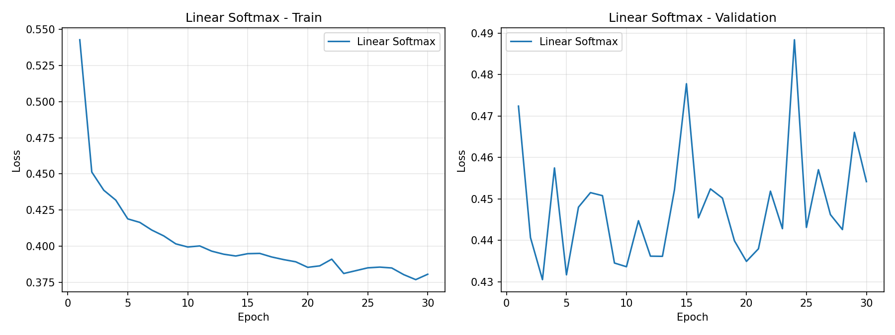
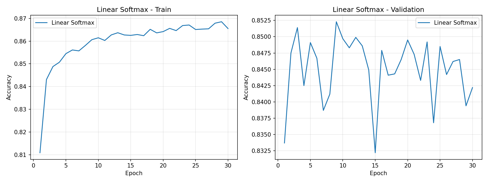
由图 1、图 2 可见，训练在第 10 轮左右即已收敛：此后训练损失稳定在 0.38 附近不再下降，训练准确率停在 0.866，验证准确率在 0.84 上下小幅波动。末轮训练准确率 0.8655 与验证准确率 0.8422 仅相差约 2.3 个百分点，说明模型处于欠拟合而非过拟合状态——继续训练或增加轮数都不会带来改善，瓶颈在于线性模型的表达能力本身。
测试集 10 000 张上的结果为：损失 0.4738，准确率 0.8319，宏平均召回率 0.8319（测试集类别均衡，两者一致）。
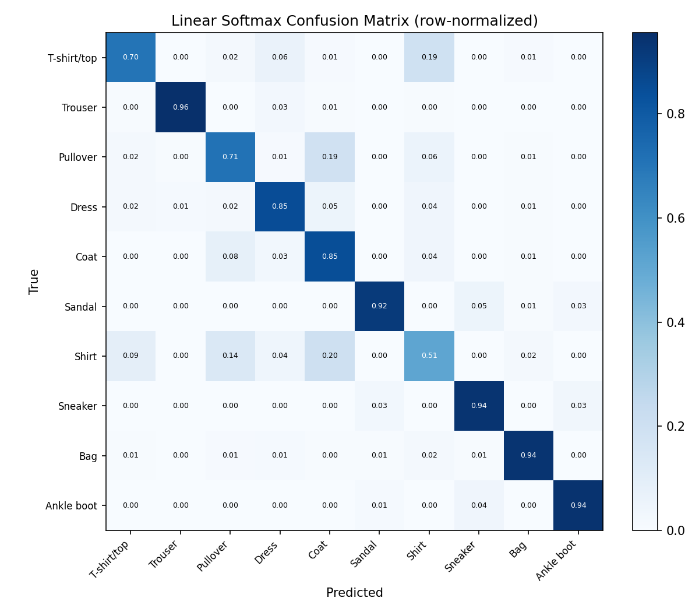
混淆矩阵显示错误并非均匀分布，而是高度集中在上衣四类之间。最严重的四组混淆为：
| 真实类别 | 预测类别 | 样本数 |
|---|---|---|
| Shirt | Coat | 196 |
| T-shirt/top | Shirt | 192 |
| Pullover | Coat | 188 |
| Shirt | Pullover | 138 |
这四组全部落在 T-shirt/top、Shirt、Pullover、Coat 之间。该现象有明确的物理原因：这四类都是上装，在 28×28 的灰度图中仅有轮廓与纹理的细微差别（领口形状、袖子有无、衣长），而线性模型只能学习「每个像素位置的权重」，无法表达「有袖子」「有领子」这类局部结构特征，因此难以区分。
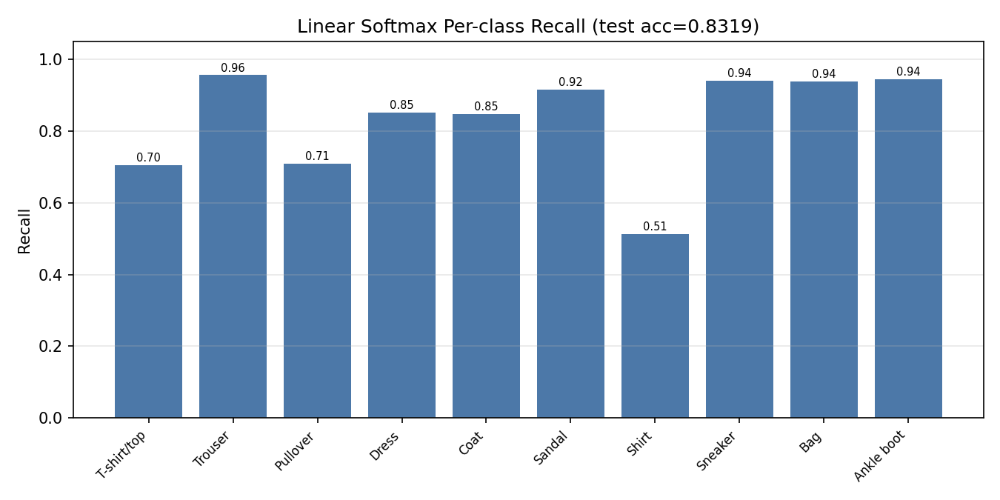
| 类别 | 召回率 | 正确 / 总数 |
|---|---|---|
| Shirt | 0.512 | 512 / 1000 |
| T-shirt/top | 0.705 | 705 / 1000 |
| Pullover | 0.710 | 710 / 1000 |
| Coat | 0.847 | 847 / 1000 |
| Dress | 0.851 | 851 / 1000 |
| Sandal | 0.916 | 916 / 1000 |
| Bag | 0.938 | 938 / 1000 |
| Sneaker | 0.940 | 940 / 1000 |
| Ankle boot | 0.944 | 944 / 1000 |
| Trouser | 0.956 | 956 / 1000 |
召回率呈现明显的两极分化：下半部分的五类（Sandal 至 Trouser）都在 0.92 以上，因为这些类别的轮廓与其余类别差异显著；而上衣四类的召回率均低于 0.86，其中 Shirt 仅 0.512，即近一半的衬衫被误判。总准确率 0.8319 掩盖了这一严重的不均衡，只有逐类指标才能暴露出来。
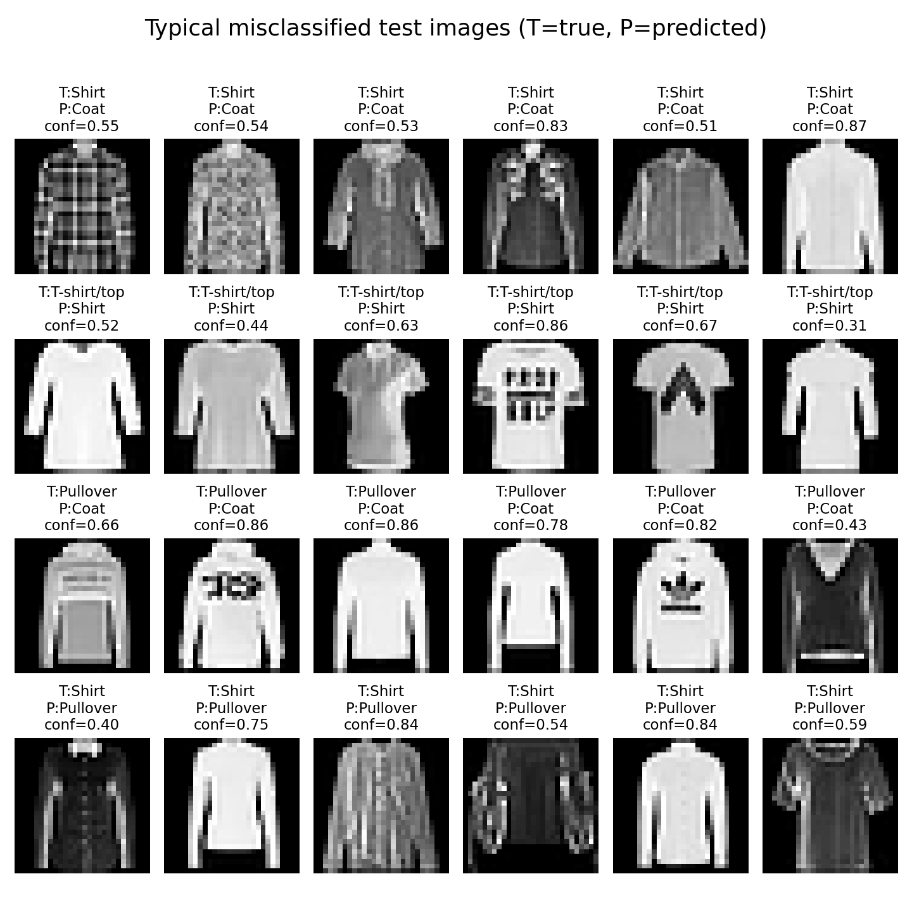
图 5 按混淆组合分组展示被误判的测试样本。可以观察到三个现象：
本实验的核心是「受控」：三个模型除网络结构外，其余条件全部相同。具体包括：
此外，模型②③均不使用 BatchNorm 或 Dropout，避免引入额外变量。
| 模型 | 参数量 | 末轮训练损失 | 末轮验证损失 | 最优验证准确率 | 测试损失 | 测试准确率 | 训练耗时 (s) |
|---|---|---|---|---|---|---|---|
| ① 线性 Softmax | 7 850 | 0.3806 | 0.4542 | 0.8523 | 0.4738 | 0.8319 | 24.8 |
| ② 双层线性（无激活） | 203 530 | 0.3707 | 0.4605 | 0.8572 | 0.4794 | 0.8305 | 35.9 |
| ③ 双层线性 + ReLU | 203 530 | 0.1192 | 0.3373 | 0.8965 | 0.3698 | 0.8820 | 36.9 |
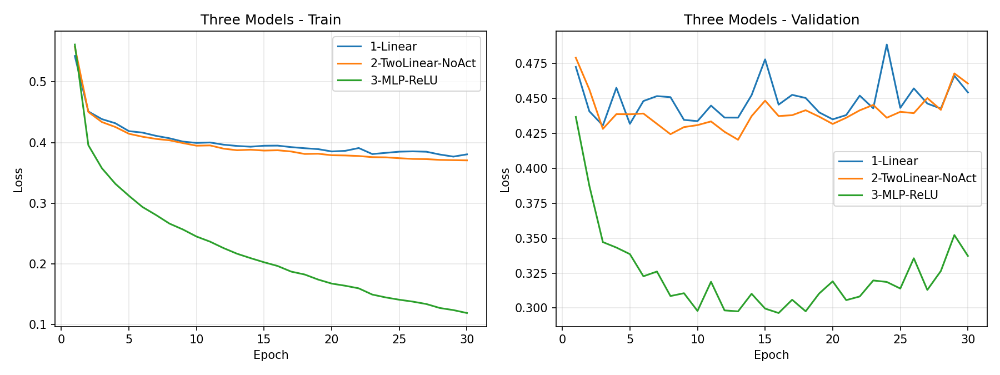
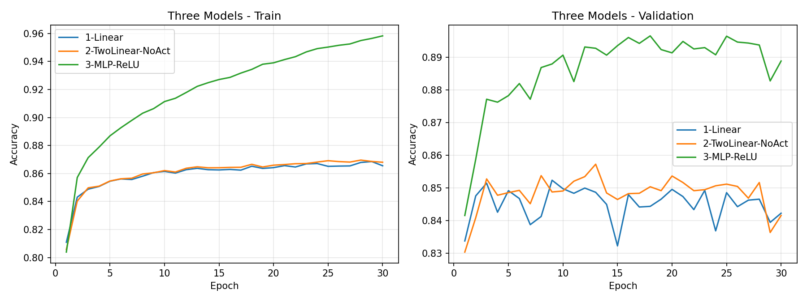
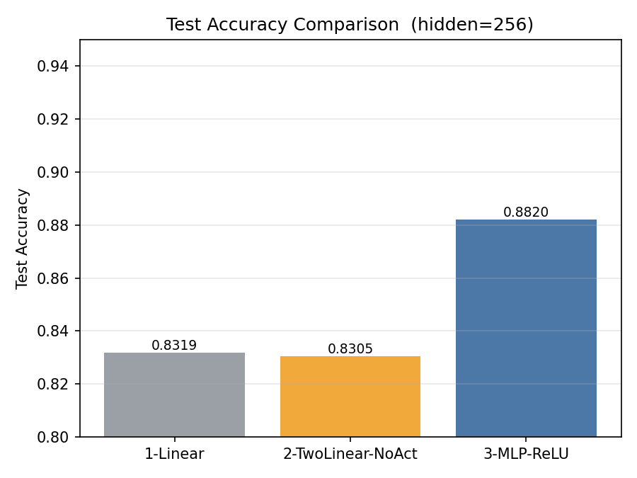
模型②的参数量是模型①的 25.9 倍（203 530 对 7 850），而测试准确率反而低 0.14 个百分点（0.8305 对 0.8319）。从图 6、图 7 可以看到，两条曲线几乎完全重合。
这一结果完全符合理论预期。模型②的前向传播为
令 W′ = W2W1、b′ = W2b1 + b2，则模型②在数学上就是一个线性分类器，其假设空间与模型①完全相同。多出的 195 680 个参数只是把同一个线性映射做了冗余参数化，不带来任何表达能力。因此
结论一：在没有非线性激活的情况下，堆叠线性层不会增加模型容量。「加深网络」的前提是层与层之间存在非线性变换，否则整个网络坍缩为一个线性模型，增加层数只增加参数与计算量，不增加表达能力。
模型②的准确率比模型①低 0.14 个百分点，处于随机波动量级，不构成显著差异。其损失曲线略高，可解释为冗余参数化使优化曲面在参数空间中变得更复杂（同样的函数对应无穷多组参数），优化效率略有下降，但这属于次要效应。
模型③与模型②的参数量完全相同（均为 203 530），唯一差别是在两层线性之间插入了 ReLU。测试准确率从 0.8305 提升到 0.8820，提升 5.15 个百分点。
结论二：在参数量严格不变的条件下，仅引入一个 ReLU 非线性就带来 5.15 个百分点的提升。这组对照把「模型容量的贡献」与「非线性表达的贡献」彻底分离开：提升完全来自非线性变换带来的表达能力，而非参数量的增加。
从图 7 还可以观察到模型③出现了明显的过拟合：训练准确率持续攀升至 0.9583，而验证准确率在第 20 轮前后达到峰值 0.8965 后开始回落，末轮降至 0.8888，二者差距约 7 个百分点。对应地，验证损失从第 20 轮的 0.2964 回升至末轮的 0.3373。相比之下，模型①②的训练与验证准确率差距仅约 2.3 个百分点。这说明模型③的容量已经超出该数据规模所需，若要进一步提升泛化性能，可考虑引入权重衰减、Dropout 或早停策略。
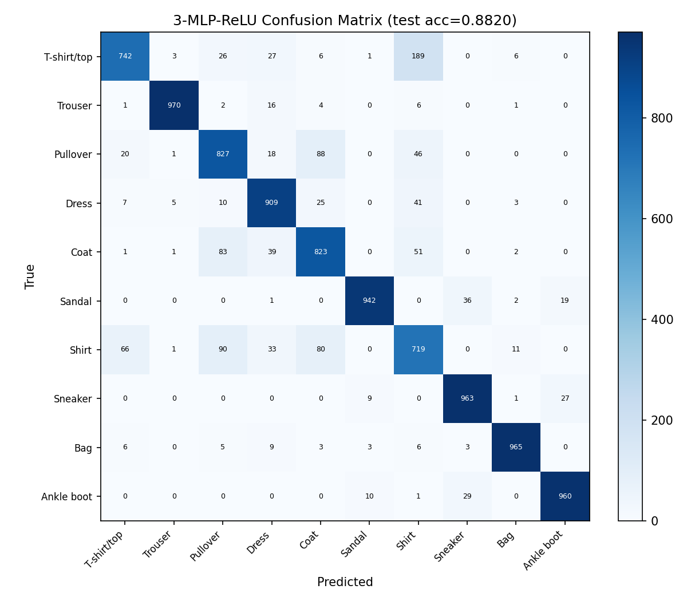
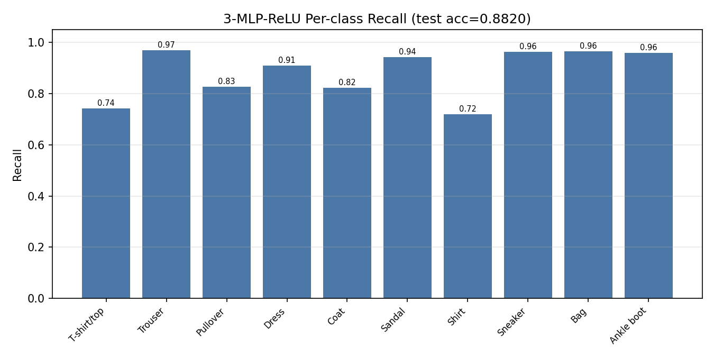
| 类别 | ① 线性 | ③ MLP+ReLU | 变化 |
|---|---|---|---|
| Shirt | 0.512 | 0.719 | +20.7 |
| Pullover | 0.710 | 0.827 | +11.7 |
| Dress | 0.851 | 0.909 | +5.8 |
| T-shirt/top | 0.705 | 0.742 | +3.7 |
| Trouser | 0.956 | 0.970 | +1.4 |
| Sandal | 0.916 | 0.942 | +2.6 |
| Bag | 0.938 | 0.965 | +2.7 |
| Sneaker | 0.940 | 0.963 | +2.3 |
| Ankle boot | 0.944 | 0.960 | +1.6 |
| Coat | 0.847 | 0.823 | −2.4 |
（表中变化单位为百分点。）总准确率提升 5.01 个百分点，但这一提升并非均匀分摊：Shirt 一类就贡献了 20.7 个百分点的召回率提升，Pullover 提升 11.7 个百分点，而 Coat 反而下降 2.4 个百分点。这说明 ReLU 带来的增益主要作用于原本最难区分的类别——MLP 能够通过隐藏层学习到「有无袖子」「领口形状」这类局部结构特征，而线性模型只能学习全局的像素权重。
值得注意的是 Coat 的召回率略有下降，且从混淆矩阵可见 Coat 有 83 例被误判为 Pullover。这表明非线性的增益在不同类别间的分配并不均衡，部分形态相近的类别仍存在此消彼长的关系。
在调试 MLP 训练时出现如下现象：当学习率取 1.0 时，训练损失不下降反而剧烈上升，模型在整个训练过程中完全没有学到任何东西，验证准确率始终停留在随机水平（10%）附近。
初步判断为步长超过了损失曲面的稳定范围。理由如下：
SGD 的参数更新量为 Δθ = lr · g。当学习率过大时，参数一步就跨过了损失曲面的谷底，导致损失不减反增；损失增大后梯度进一步增大，形成正反馈，损失量级持续攀升直至数值溢出。
动量项会加剧这一过程。带动量的 SGD 在梯度方向稳定时，等效步长约为 lr / (1 − momentum)。本实验取 momentum = 0.9，等效放大倍数约 10 倍，即 lr = 0.1 配 momentum = 0.9 的有效步长已相当于朴素 SGD 的 lr = 1.0。这解释了为何在带动量的设定下，学习率需要取得比通常更小。
需要强调的是，上述判断只是假设。可能导致训练失败的因素还包括初始化不当、数据未归一化、损失函数实现错误等。必须通过控制变量的实验来排除其他可能。
验证策略：固定网络结构、数据划分、优化器类型、动量系数、批大小、训练轮数与随机种子全部不变，只改变学习率这一个因素，取 lr ∈ {0.01, 0.1, 1.0}，训练 20 轮。由于其他所有条件都被固定，学习率是唯一的自变量，实验结果可以归因。
| 学习率 | 首个 epoch 损失 | 末轮训练损失 | 最优验证准确率 | 结论 |
|---|---|---|---|---|
| 0.01 | 0.5616 | 0.1677 | 0.8965 | 正常收敛 |
| 0.1 | 0.5556 | 0.2346 | 0.8753 | 收敛但明显更差 |
| 1.0 | 69.9874 | 2.3081 | 0.1374 | 未收敛 / 震荡 |
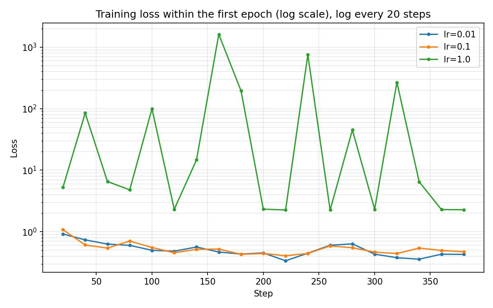
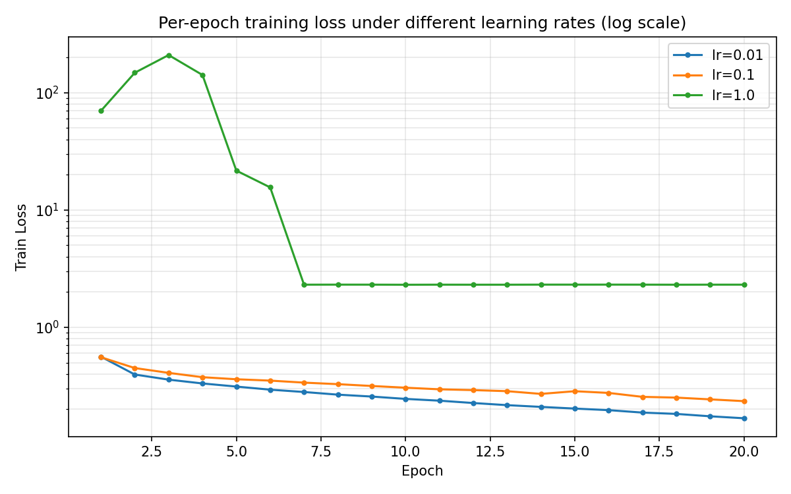
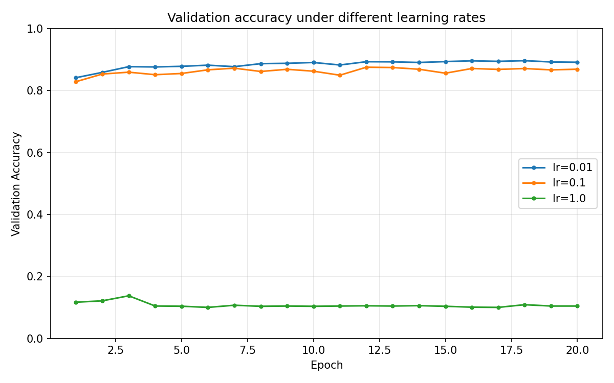
学习率 0.01：损失平稳单调下降，末轮训练损失 0.1677，验证准确率 0.8965，训练正常。
学习率 0.1：仍能收敛，但末轮训练损失 0.2346（比 0.01 高 40%），验证准确率 0.8753，低 2.1 个百分点。说明学习率偏大时的退化是渐进的，而非突变的——在发散之前，性能就已经在悄悄损失。
学习率 1.0：训练完全失败。图 10 显示第一个 epoch 内损失就在 0.5 至 1800 之间反复震荡，毫无下降趋势；首个 epoch 的平均损失高达 69.99。图 11 显示，从第 7 个 epoch 起损失稳定停在 2.303。
这个数值极具说明性：2.303 = ln 10，正是 10 类等概率分布下的交叉熵（−ln(1/10)）。它意味着模型输出的 logits 已经趋同，Softmax 退化为均匀分布，即模型对任何输入都给出完全相同的预测。图 12 中该曲线的验证准确率恰为 10%，与此完全吻合——模型已经彻底失去判别能力。
结论三：在其余条件全部固定的情况下，仅改变学习率就使同一个模型从正常收敛（0.8965）变为完全失败（0.1374）。这排除了网络结构、数据划分、初始化方式等其他解释，证实训练失败的原因是步长过大。
定量地看，该配置下的安全学习率在 0.01 附近；0.1 已出现可测量的退化；1.0 完全失效。
作为该结论的进一步佐证，将学习率继续加大到 2.0 时，损失会直接溢出到 1026 量级，与「步长越大发散越快」的机理一致。
为保证结果可复现，实现中处理了三个容易被忽略的问题：
fashion-mnist-lab/ ├── config.py 全局配置：随机种子、划分比例、超参数、路径 ├── data_utils.py 数据加载、固定划分、DataLoader 构建 ├── models.py 三个 PyTorch 模型 ├── numpy_mlp.py 纯 NumPy 的 forward 与 backward ├── grad_check.py 中心差分梯度检查 ├── trainer.py 三模型共用的训练与评估循环 ├── evaluate.py 混淆矩阵、逐类召回率、曲线、典型错误可视化 ├── train_linear.py 实验二：线性 Softmax 基线 ├── train_compare.py 实验三：三模型受控比较 ├── diagnose.py 实验四：学习率诊断 ├── run_all.py 一键跑通全部实验 └── outputs/ 所有结果：图片、CSV、JSON
环境依赖：Python 3.13、NumPy、PyTorch(cpu)、torchvision、Matplotlib。全部实验在 CPU 上完成。
# 一键运行全部实验（约 4 分钟） python run_all.py # 也可单独运行各部分 python grad_check.py # 梯度检查，约 5 秒 python train_linear.py # 线性基线，约 30 秒 python train_compare.py # 三模型比较，约 1.7 分钟 python diagnose.py # 学习率诊断，约 1.8 分钟
数据集首次运行时自动下载（约 30 MB）。所有超参数集中在 config.py 中，修改一处即可全局生效。
全局种子 SEED = 42，控制数据划分、参数初始化与 DataLoader 的打乱顺序。由于数据划分索引已落盘（outputs/split_indices.npz），删除该文件将重新划分数据集，数值结果随之改变，但三个模型仍共用同一份划分，比较依然受控。在相同环境下重复运行，结果完全一致。
| 作业要求 | 对应文件 |
|---|---|
| 梯度检查结果 | 表 4、5；outputs/grad_check.csv |
| 三模型性能表 | 表 8；outputs/compare_table.csv |
| 训练与验证曲线 | 图 1、2、6、7、11、12 |
| 混淆矩阵 | 图 3、9 |
| 逐类召回率 | 表 7、9；图 4 |
| 典型错误 | 图 5 |
| 可运行源代码 | fashion-mnist-lab/ 全部代码 |
| README 说明文件 | fashion-mnist-lab/README.md |